Kyiv is an important industrial, scientific, educational, and cultural center in Eastern Europe. It is home to many high-tech industries, higher education institutions, and historical landmarks. The city has an extensive system of public transport and infrastructure, including the Kyiv Metro.
History of KyivTop Places to Go in Kyiv
Kyiv Pechersk Lavra Monastery
Do not miss the underground crypts, where monks are buried under glass.
Independence Square
The attraction contains six fountains, a waterfall, and a large column representing Ukrainian independence.
National Botanical Garden
Take a walk through the hothouses, greenhouses, or conservatories, where you can check out the exotic plants.
The Motherland Monument
This giant titanium statue is taller than the Statue of Liberty. There is a viewing platform.

The Mariyinsky Palace
Inside, visitors will find a collection of artwork by Ukrainian masters, as well as cultural and historic treasures.
The Golden Gate
The gates that are here today pay honor to the main gate in the 11th century that helped fortify Kiev.
More Photos Of Kyiv
 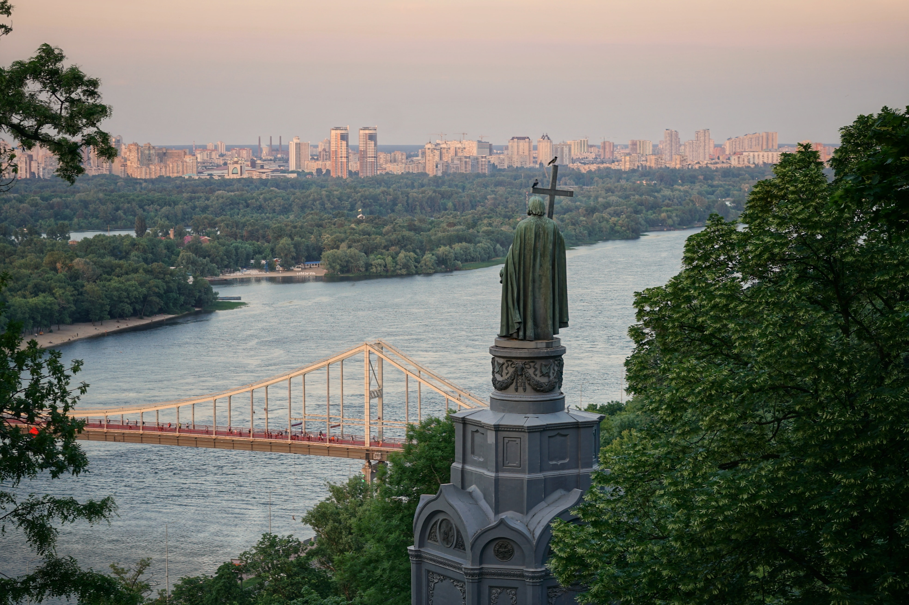
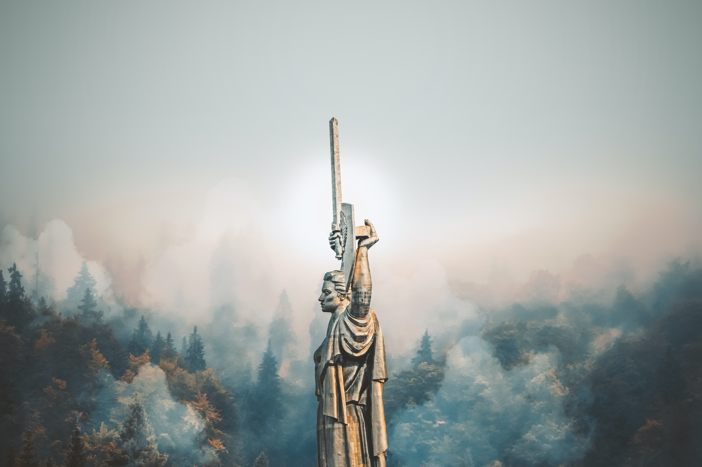
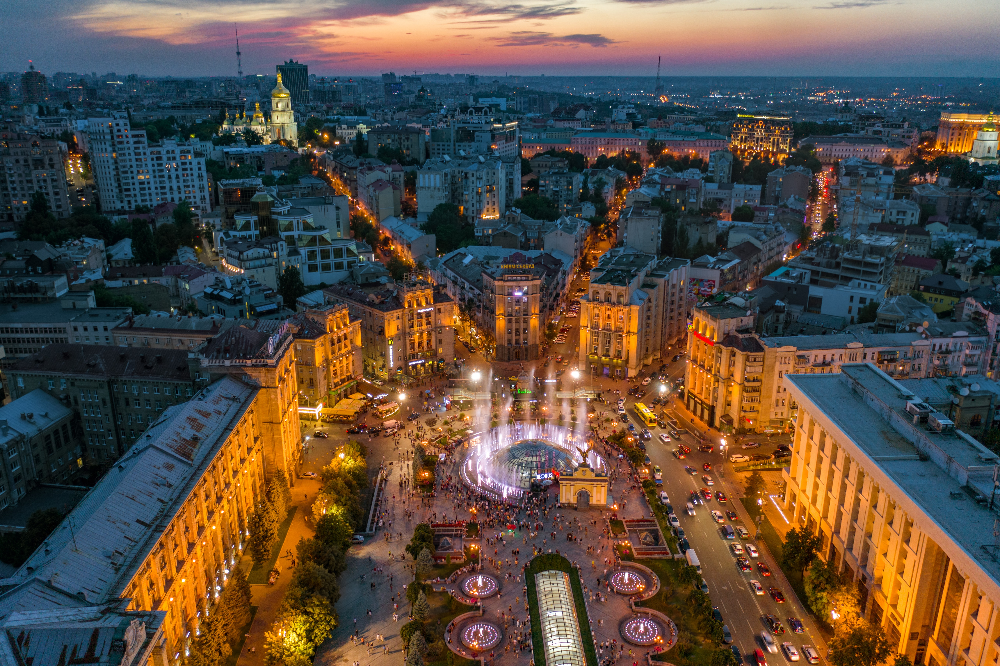
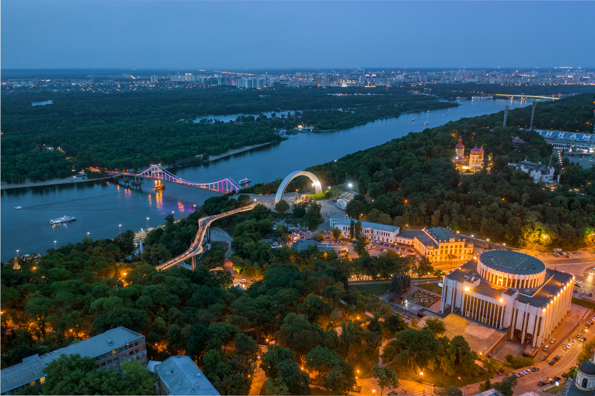
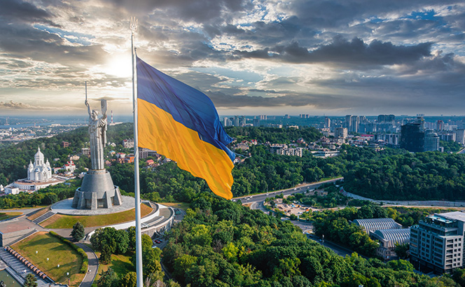
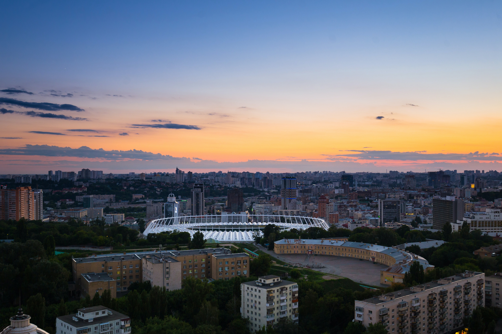
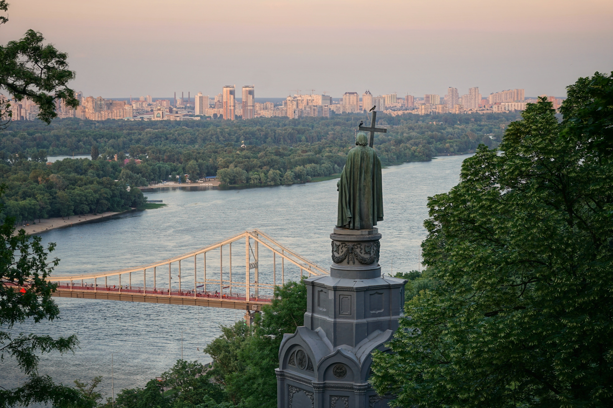
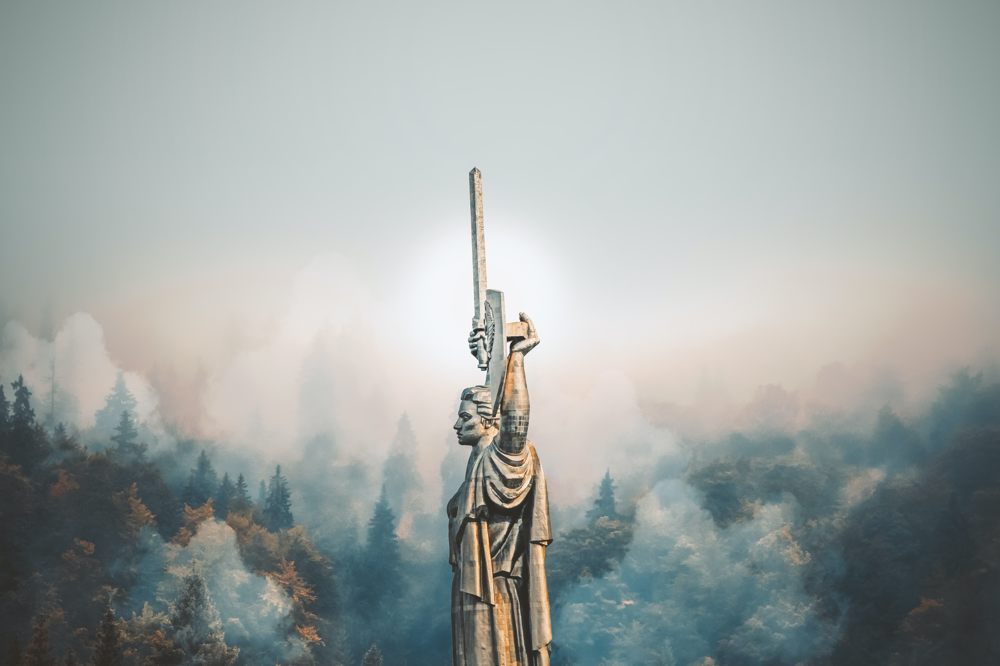
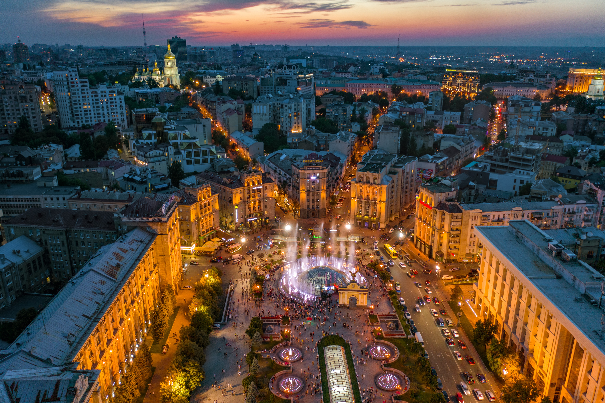
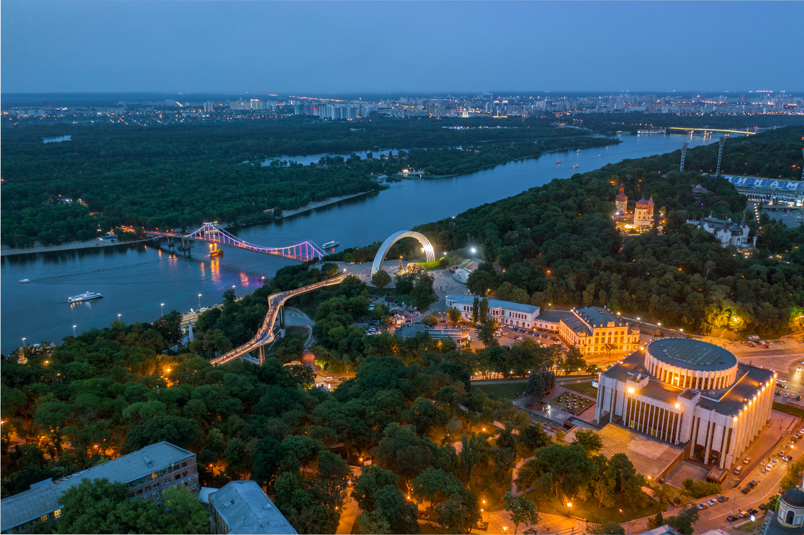
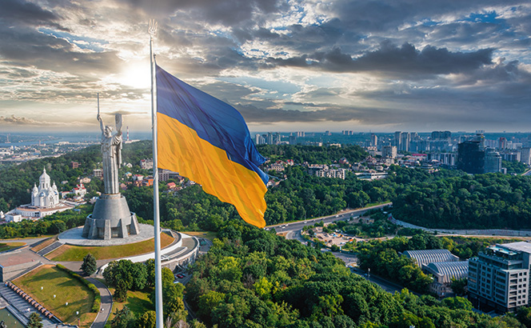
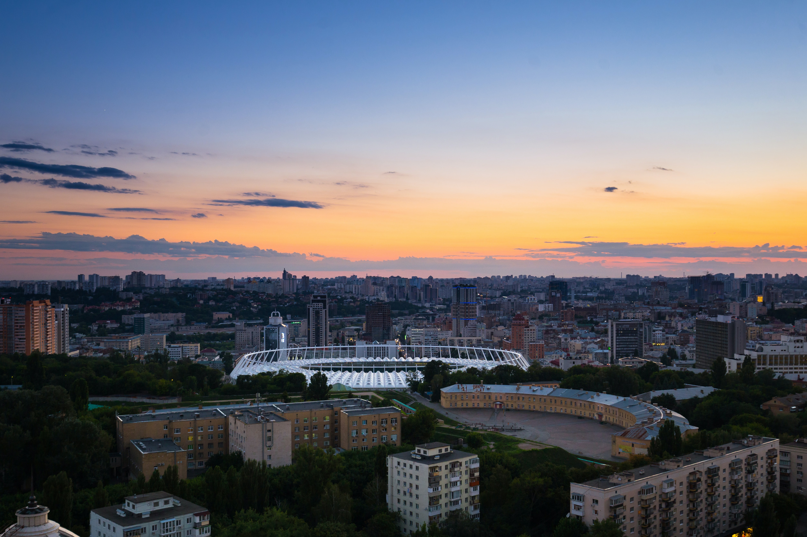